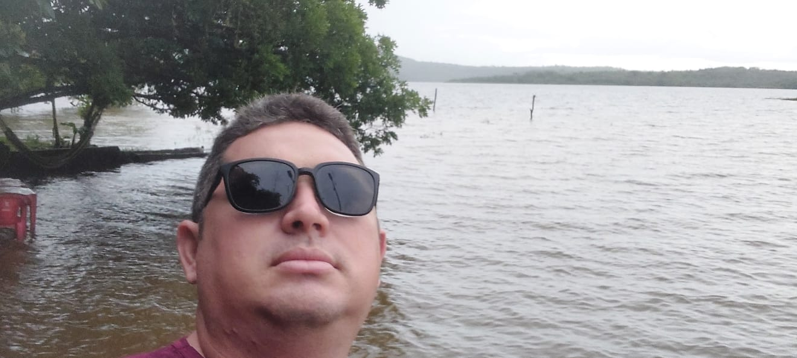

Olá, eu sou o Gerson
Brasileiro, piripiriense e estudante de Sistemas para Internet pela UAP no município de Brasileira, Piauí.
Atualmente, foco meus estudos em me qualificar para o mercado de trabalho, buscando crescimento profissional e pessoal. Nas horas livres, gosto de apreciar os pontos turísticos de Piripiri, como o Açude Caldeirão.